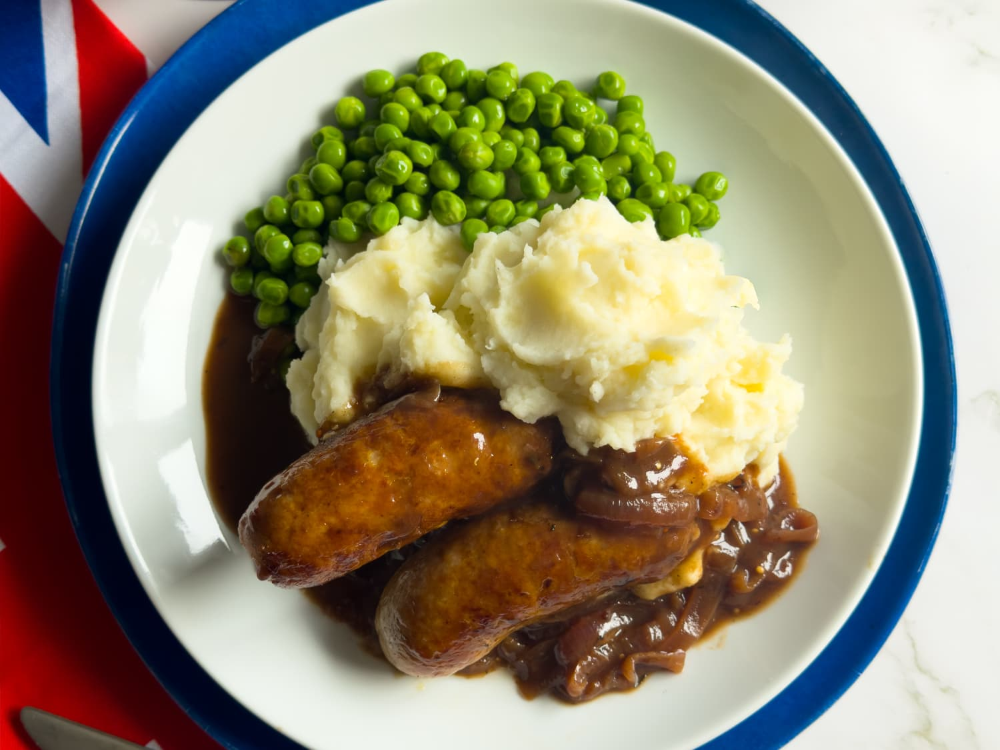

Bangers and Mash

Description
Bangers and mash gets its name because sausages used to bang or burst while cooking.
Mash, meanwhile, refers to the mashed potatoes. This recipe was a staple at our home in Dublin at Halloween.
It is a very cheap, very traditional supper, and one that truly requires good sausage.
Ingredients
- 2 ¼ pounds potatoes, peeled and quartered
- 2 chicken bouillon cubes
- 1 cup warm milk
- ¼ cup melted butter
- 1 tablespoon cooking oil
- 8 links pork sausage
- 1 large onion, sliced and separated into rings
- 2 (10.25 ounce) cans home style beef gravy
- 2 teaspoons crumbled dried oregano
Steps
- Place the potatoes in a pan, and add enough water to cover. Bring to a boil, and cook until tender, about 20 minutes. Drain, leaving the potatoes in the pan.
- Meanwhile, stir the bouillon cubes into the warm milk until dissolved. Stir the milk mixture and butter into the potatoes. Mash the potatoes until smooth and creamy.
- Heat the cooking oil in a skillet over medium-high heat. Prick the sausages in a few places with a fork, and place them into the skillet. Cook, turning often, until golden brown and juices run clear, 12 to 15 minutes depending on thickness. Remove from the skillet and drain on paper towels.
- Heat the gravy in a pan over medium heat.
- To serve, scoop the potatoes onto a large serving plate. Arrange the sausages over the potatoes, top with the onions, drizzle with gravy, and sprinkle with oregano.
⬅Home